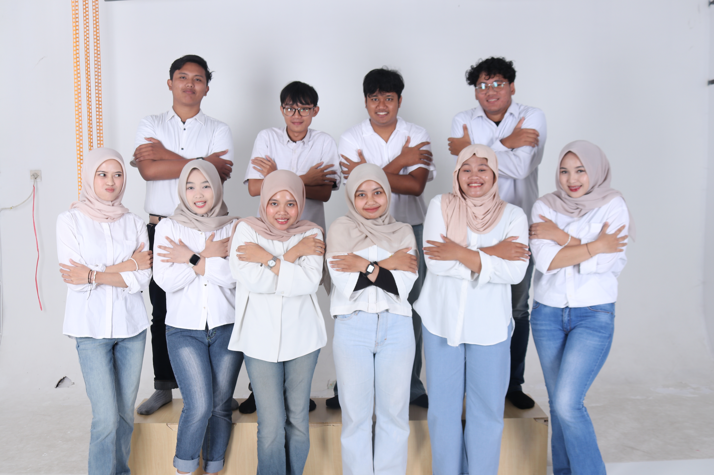
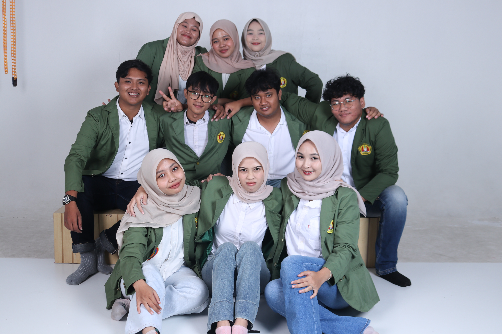
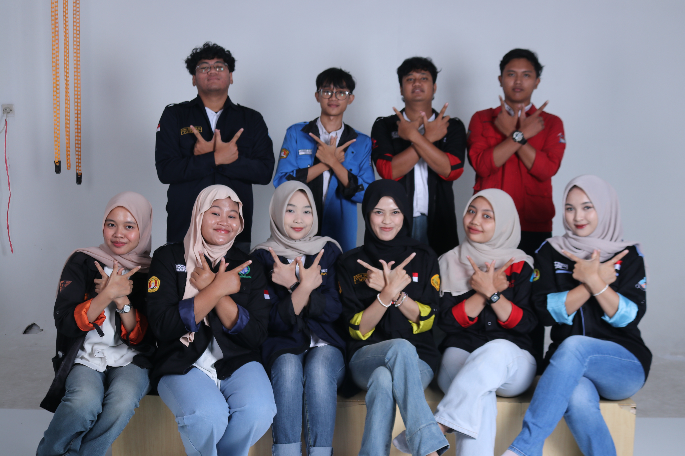
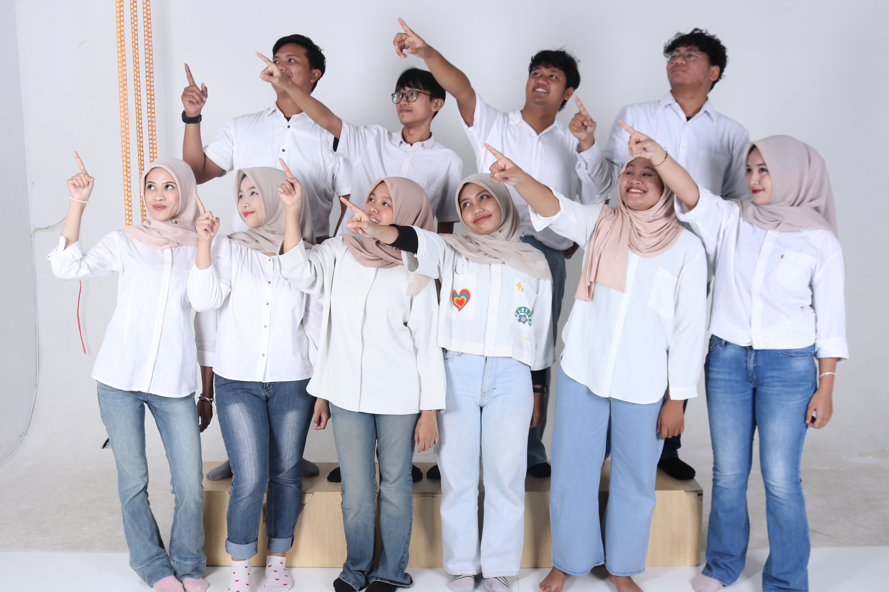

Sayur-Mayur Segar
Dusun Bangsari dianugerahi tanah subur yang ideal untuk pertanian sayuran. Komoditas utama kami meliputi kol, sawi, dan labu siam. Ditanam secara tradisional oleh para petani lokal, sayuran kami dikenal karena kesegaran dan kualitasnya yang premium, bebas dari bahan kimia berbahaya.
Hasil panen ini tidak hanya memenuhi kebutuhan pasar lokal tetapi juga menjadi sumber pendapatan utama bagi banyak keluarga di dusun.

Cabai
Cabai merupakan salah satu komoditas andalan dari Dusun Bangsari. Dengan perawatan intensif dan pengetahuan turun-temurun, para petani kami berhasil membudidayakan berbagai jenis cabai dengan tingkat kepedasan dan aroma yang khas. Cabai dari dusun kami menjadi bahan baku penting bagi industri kuliner dan sambal di berbagai daerah.

Tembakau Berkualitas
Selain pangan, Dusun Bangsari juga dikenal sebagai penghasil tembakau berkualitas tinggi. Iklim dan kontur tanah di wilayah kami sangat mendukung pertumbuhan tanaman tembakau. Proses panen dan pengeringan dilakukan dengan cermat untuk menjaga kualitas aroma dan rasa, menjadikannya salah satu komoditas bernilai ekonomi tinggi bagi masyarakat.

Kayu Lokal
Potensi alam Dusun Bangsari juga mencakup hasil kayu dari hutan rakyat. Jenis kayu yang dihasilkan umumnya digunakan untuk bahan bangunan lokal dan kerajinan tangan. Pengelolaan dilakukan dengan memperhatikan aspek kelestarian agar sumber daya alam ini tetap terjaga untuk generasi mendatang.